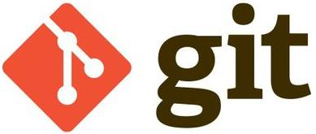

GIT : Fonctions de bases et + ...

Git is a free and open source distributed version control system designed to handle everything from small to very large projects with speed and efficiency.
© 2023 Life goes on - Tous droits réservés
Alice AND Bob
Love Forever
BTS IS MY LIFE